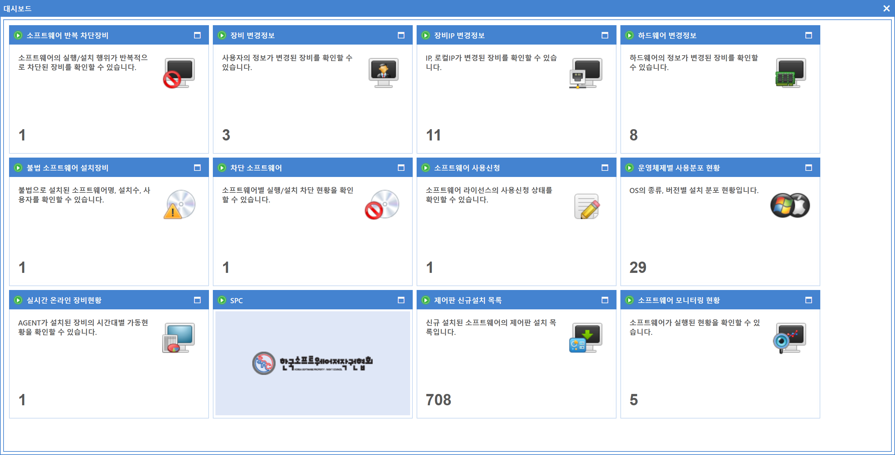
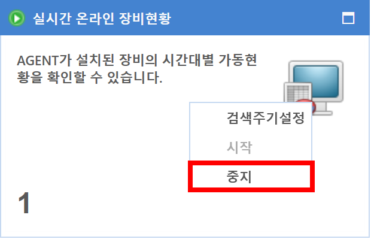

9-1-2. 대시보드
9-1-2. 대시보드
Source: https://www.sweeper.or.kr/etc/manual/9-1-2.html
9-1-2. 대시보드


대시보드는 핵심적인 정보를 한 눈에 쉽게 확인할 수 있도록 그래픽컬한 형태로 보여주는 화면입니다.

화면 설명
- 소프트웨어, 장비 정보등의 중요정보를 한눈에 확인할 수 있습니다.
- 지정한 주기(기본 1분)마다 자동으로 검색이 가능하며 원치 않을 경우 타이틀에 우클릭 메뉴를 통하여 중지할 수 있습니다.

- 주기 설정은 항목별로 가능하며 타이틀 우클릭 메뉴로 설정이 가능합니다. (로컬 저장)


- 자세한 정보를 확인할 수 있습니다.

© Copyright SWeeper Inc.. All Rights Reserved